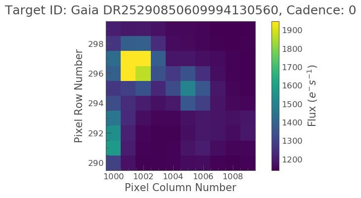
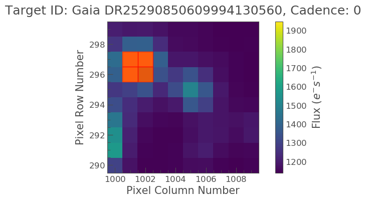
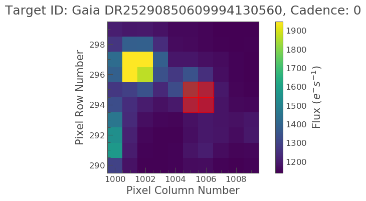
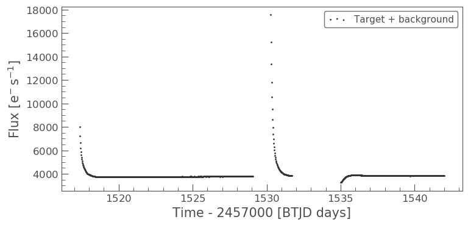

How to perform aperture photometry with custom apertures
Learning goals
We have discussed in the previous tutorial how Simple Aperture Photometry works (SAP). A set of pixels in the image are chosen and we sum those to produce a single flux value. We sum the same pre-selected pixels for every image at each time slice to produce a light curve.
The SPOC produces an aperture, which is used by default by Lightkurve. However, there are some cases where you might want to produce your own aperture. The field may be crowded, or you may wish to change the aperture size to change the relative contribution of the background. Lightkurve offers tools to select pixels programmatically.
First, let’s load a target pixel file. Let’s choose Gaia object DR25290850609994130560. This object was observed in TESS FFI data. We’ll use the search_tesscut function to download a cut out of the target in a single sector. You can determine which sectors the target was observed in using the MAST TESS portal.
Imports
This tutorial requires: - Lightkurve - Matplotlib - numpy
%matplotlib inline import lightkurve as lk import matplotlib.pyplot as plt import numpy as np
Downloading data
Lets see when Gaia object DR25290850609994130560 was observed.
search_result = lk.search_tesscut('Gaia DR25290850609994130560') print(search_result)
SearchResult containing 5 data products. # observation author target_name productFilename distance --- -------------- ------ --------------------------- --------------- -------- 0 TESS Sector 4 MAST Gaia DR25290850609994130560 TESSCut 0.0 1 TESS Sector 7 MAST Gaia DR25290850609994130560 TESSCut 0.0 2 TESS Sector 8 MAST Gaia DR25290850609994130560 TESSCut 0.0 3 TESS Sector 9 MAST Gaia DR25290850609994130560 TESSCut 0.0 4 TESS Sector 10 MAST Gaia DR25290850609994130560 TESSCut 0.0
We can see that this object is detected in Sectors 4, 7, 8, 9, and 10. You can download data from just one sector and specify the cutout_size in number of TESS pixels on a side as an argument to .download(). The default is a meager 5 × 5 square. Let’s go with 10 pixels square.
search_result = lk.search_tesscut('Gaia DR25290850609994130560', sector=8) tpfs = search_result.download(cutout_size=10) print(tpfs)
TessTargetPixelFile(TICID: Gaia DR25290850609994130560)
We now have a TessTargetPixelFile object that we can examine.
Examine the data
Lets plot the data.
tpfs.plot();
Our object of interest should be located at the center of the image. There however appears to be a bright star near by, is this our object? We can check by using the interact_sky function which can overlay Gaia objects.
tpfs.interact_sky(magnitude_limit=14)
By adjusting the screen stretch below and moving our pointer over the red circles we can see that our object of interest is indeed the center object and not the bright object.
Because we created this TPF from a FFI there is no predefined SPOC aperture and as such we have to make our own. We can do this via the create_threshold_mask. This method will identify the pixels in the TPF which show a median flux that is brighter than threshold times the standard deviation above the overall median. The standard deviation is estimated in a robust way by multiplying the Median Absolute Deviation (MAD) with 1.4826. In this example we will pick 10 as our threshold.
target_mask = tpfs.create_threshold_mask(threshold=10, reference_pixel='center') n_target_pixels = target_mask.sum() n_target_pixels
4
Lets now plot this up and see what it looks like.
tpfs.plot(aperture_mask=target_mask, mask_color='r');
Oh no! It looks like the bright object next to our object of interest was covered, not our object. We have to correct this. We can do this K it looks like our object is covered nicely by the aperture, lets see what the light curve looks like!
Specify an aperture array
We need to define a new aperture array such that our aperture will cover our object of interest. In our [previous tutorial](Aperture-Photometry-Tutorial.html) we learn that aperture arrays are boolean, based on this lets make up a new array.
aper_new = np.zeros(tpfs.shape[1:], dtype=bool) aper_new[4:6, 5:7] = True tpfs.plot(aperture_mask=aper_new, mask_color='red')
<matplotlib.axes._subplots.AxesSubplot at 0x7fa9d0b49278>
Ok that is much better. Lets take a look at the light curve data using this aperture.
target_lc = tpfs.to_lightcurve(aperture_mask=target_mask) print(target_lc)
time flux flux_err ... cadenceno quality
electron / s electron / s ...
------------------ ----------------- ------------------ ... --------- -------
1517.3666381835938 8007.5966796875 2.5630364418029785 ... 0 2048
1517.3875122070312 7244.67626953125 2.450223445892334 ... 1 2048
1517.4083251953125 6630.228515625 2.352027654647827 ... 2 0
1517.4291381835938 6195.158203125 2.283012628555298 ... 3 0
1517.4500122070312 5870.74609375 2.2279577255249023 ... 4 0
1517.4708251953125 5619.29345703125 2.1846823692321777 ... 5 0
1517.4916381835938 5409.947265625 2.1488730907440186 ... 6 0
1517.5125122070312 5226.427734375 2.1181600093841553 ... 7 0
1517.5333251953125 5080.0048828125 2.0899178981781006 ... 8 0
1517.5541381835938 4946.3740234375 2.065858840942383 ... 9 0
... ... ... ... ... ...
1541.804443359375 3837.7802734375 1.8543916940689087 ... 953 0
1541.8252563476562 3843.681396484375 1.8543570041656494 ... 954 0
1541.8461303710938 3844.8037109375 1.854981780052185 ... 955 0
1541.866943359375 3844.24755859375 1.8543776273727417 ... 956 0
1541.8877563476562 3846.120849609375 1.854745864868164 ... 957 0
1541.9086303710938 3848.494384765625 1.854871392250061 ... 958 0
1541.929443359375 3849.5419921875 1.8557531833648682 ... 959 0
1541.9502563476562 3847.31689453125 1.8546956777572632 ... 960 0
1541.9711303710938 3848.44873046875 1.8580995798110962 ... 961 0
1541.991943359375 3847.9404296875 1.8589082956314087 ... 962 0
Length = 963 rows
Great! Now lets plot this light curve.
target_lc.scatter(label='Target + background')
<matplotlib.axes._subplots.AxesSubplot at 0x7fa9a0840630>
Above we see that the object looks to have some sort of variability. There also appears to be some sort of data gap. What is this caused by? Lets check the TESS Data Release Notes for sector 8. If we look at this we see that there was an instrument anomaly starting on 1531 and ending 1535. This explains some of issues we are seeing.
What about the two bright peaks though, this is unlikely from our object of interest. It might be useful to visually inspect these cadences to better understand what is happening. We can learn how to do this in the next tutorial!